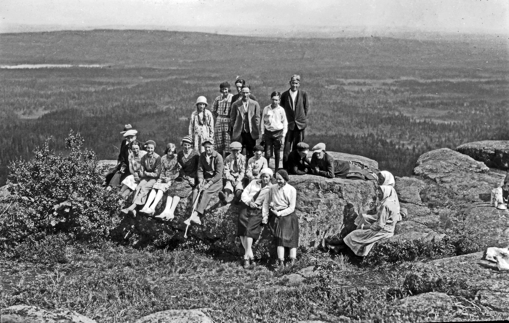
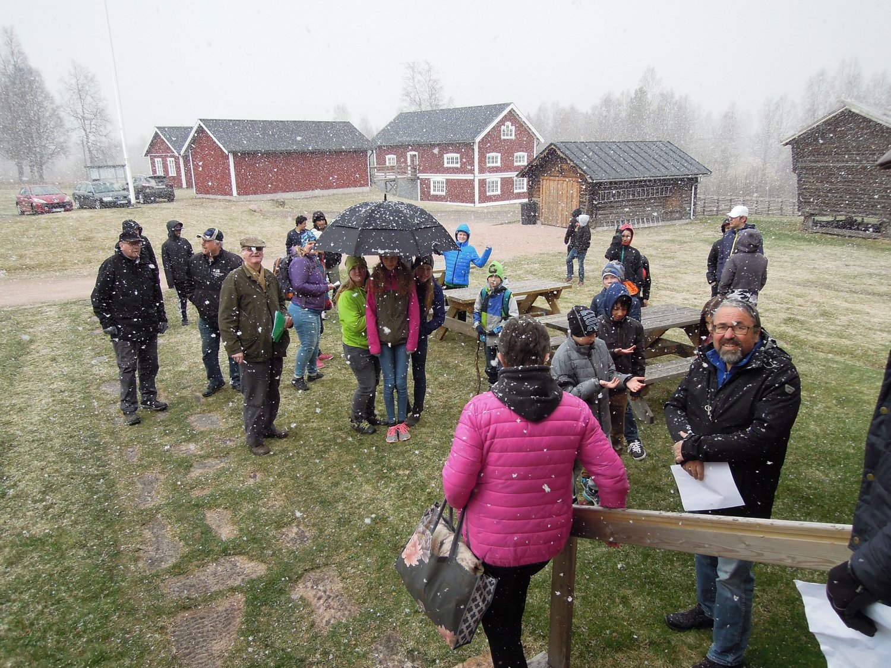

Verksamhet
Om föreningen
Malungsfolk på Gnupen i Malung cirka 1920-30-talet. Väl uppe på Gnupen är utsikten milsvida. Vid klart väder kan man se ända till Mora. Bild från Gråbergs Harald Perssons samling (401-500).
Föreningen bildades 1919 för att stå vakt och vårda bygdens kulturarv samt att verka för att bygdens historia genom text, bild och föremål dokumenteras för framtiden. Föreningens verksamhet innebär också att hålla materialet i görligaste mån tillgängligt för visning, forskning, etc. och för att uppmuntra till forskning om bygdens historia, natur och näringar. En annan viktig uppgift är att hävda betydelsen av malungsmålets bevarande.
Arrangemang
UTSTÄLLNINGAR
Skinnutställningen: Visar utvecklingen av Malungs Skinnhantering från hantverk till industri.
Sko- och sadelmakeriverkstad: Komplett sko- och sadelmakeri från 1930-talet.
Dräkt- och textilsamlingar.
MIDSOMMARFIRANDE
Midsommar firas varje år vid Malungs Hembygdsgård. Det är ett omtyckt arrangemang med många besökare.
Traditionellt och genuint midsommarfirande, som börjar kl. 17.00 midsommarafton (servering från kl. 16.00). Resning av midsommarstången. Dans kring stången. Traditionella lekar. Spelmanslag, folkdanslag.
VÅRA ÖPPETTIDER SOMMAREN 2017
Måndagar, veckorna 27-33 kl. 11-12, annan tid efter överenskommelse tel. 0280-105 57.
Klicka på länken för att läsa om vår övriga kontaktinformation